Lab P-9 - Sampling, Convolution, and FIR Filtering: 3 Lab Exercises (FIR Filters)
In the following sections we will study how a filter can produce the following special effects: 1)Echo; 2)Deconvolution
Contents
3.1 Deconvolution Experiment for 1-D Filters
Use the function firfilt() to implement the filter 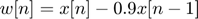 (3) on the input signal x[n] defined.
clear; %<--clear workspace close all %<--close all figures % Input signal xx=255*(rem(0:100,50)<10); % Filter coefficient bb=[1 -0.9]; % Compute the output - FIR Filter-1 ww=firfilt(bb,xx); % 3.1a)******************************************************************** % Plot both the input and output wave forms x[n] and w[n] on the same % figure, using subplot. Explain why the output appears the way it does by % figuring out (mathematically) the effect of the filter coefficient. %************************************************************************** % Array Indices first=1; last=length(xx); nn=first:last; %<-- use first=1 and last=length(xx) % Plots figure(1) subplot(2,1,1); stem(first-1:last-1,xx(nn),'LineWidth',2) xlabel('Time Index (n)','FontSize',16); ylabel('Input x[n]','FontSize',16); title('3.1a)Deconv Experiment for 1-D Filters','FontSize',16); xlim([0 75]); subplot(2,1,2); stem(first-1:last-1,ww(nn),'filled','LineWidth',2) %--Make black dots xlabel('Time Index (n)','FontSize',16); ylabel('Output w[n]','FontSize',16); xlim([0 75]); % Analysis of results: % Through the coefficient bb, the process (mathematically) of the filter is % w[n]= x[n]−0.9*x[n − 1]. % w[0]= x[0]−0.9*x[n−1]=255−0= 255; % w[1]= x[1]−0.9*x[0]=255−0.9*(255)=25.5 % w[2:9]=w[1]=25.5 % w[10]= x[10]−0.9*x[9]=0-0.9*(255)=-229.5; % w[11]= x[11]−0.9*x[10]=0-0.9*(0)=0; % w[12:49]= w[11]=0; % Then it starts over as w[0]= 255; % Initially, the output of the filter is at 255 and it suddenly declines to % 25.5 and stay constant till n=10. Moreover, the output go down negative % and then up to zero. % 3.1b)******************************************************************** % Note that w[n] and x[n] are not the same length. Determine the length of % the filtered signal w[n], and explain how it is related to the length of % x[n] and the length of the FIR filter. (If you need a hint, refer ro % section 1.2.) %************************************************************************** % Calculation length_x_n=length(xx); length_w_n=length(ww); % Message Box with results msgbox(sprintf('Total Length of x[n] = %0.5g \nTotal Length of w[n] = %0.5g'... ,length_x_n,length_w_n),'3.1b)') % Analysis of results: % Section 1.2 shows that length(yy) = length(xx)+length(bb)-1, % Thus, length(ww) = length(xx)+ length(bb)-1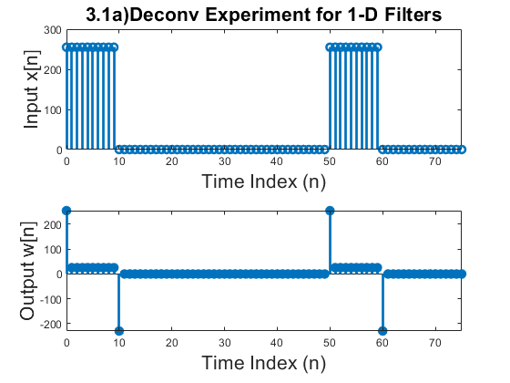 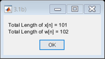
3.1.1 Restoration Filter
The filter 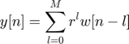 (FIR Filter-2) can be used to undo the effects of the FIR filter in the previous section. Use the following steps to show how well it works when r=0.9 and M=22.
% 3.1.1a)****************************************************************** % Process the signal w[n] from (3) with FILTER-2 to obtain the output % signal y[n] %************************************************************************** close all %<--close all figures % FIR Filter-2 Variables r=0.9; M=22; % signal y[n] yy=zeros(length(xx),1); % Compute the output - FIR Filter-2 yy=firfilt2(ww,yy,r,M); % 3.1.1b)****************************************************************** % Make stem plots of w[n] and y[n] using a time-index axis n that is the % same for both signals. Put the stem plot in the same window for % comparison - using a two-panel subplot. %************************************************************************** % Plots figure(2) subplot(2,1,1); stem(first-1:last-1,ww(nn),'r','LineWidth',2) xlabel('Time Index (n)','FontSize',16); ylabel('Output w[n]','FontSize',16); title('3.1.1b) Restoration Filter','FontSize',16); xlim([0 49]); hold on subplot(2,1,2); stem(first-1:last-1,yy(nn),'r','filled','LineWidth',2) %--Make black dots xlabel('Time Index (n)','FontSize',16); ylabel('y[n] (Restoring x[n])','FontSize',16); xlim([0 49]); ylim([min(ww) max(xx)]); hold off % 3.1.1c)****************************************************************** % Since the objective of the restoration is to produce y[n] that is almost % identical to x[n], make a plot of the error (difference) between x[n] and % y[n] over the range 0<=n<50 %************************************************************************** % Calculate Error between x[n] and y[n] error=abs(yy-xx); % Plots figure(3) subplot(2,1,1); stem(first-1:last-1,xx(nn),'b','LineWidth',2) hold on stem(first-1:last-1,yy(nn),'r','LineWidth',2) xlabel('Time Index (n)','FontSize',16); ylabel('x[n] and y[n]','FontSize',16); xlim([0 50]); title('3.1.1c) Absolute Error between x[n] and y[n]','FontSize',16); legend('x[n]','y[n]') subplot(2,1,2); plot(first-1:last-1,error,'LineWidth',2) xlabel('Time Index (n)','FontSize',16); ylabel('\miderror\mid','FontSize',16); xlim([0 50]); hold off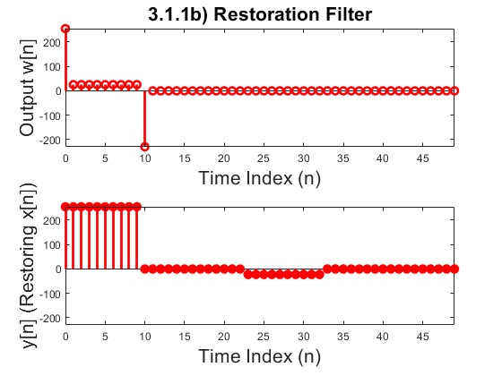 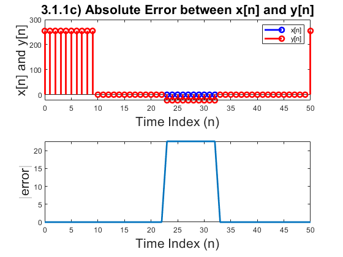
3.1.2 Worst Case Error
% 3.1.2a)****************************************************************** % Evaluate the worst-case error by doing the following: use max() function % to find the maximum of the difference between y[n] and x[n] in the range % 0 <= n < 50. %************************************************************************** close all %<--close all figures % Calculate worst-case error wrst_error=max(error(1:51)) ; % Message Box with results msgbox(sprintf('WRST Error between y[n] & w[n] = %0.5g'... ,wrst_error),'3.1.2)') % 3.1.2b)****************************************************************** % What does the error plot and worst case error tell you about the quality % of the restoration of x[n]? How small do you think the worst case error % has to be so that it cannot be seen on a plot? %************************************************************************** % Analysis of results: % The max difference between x[n] and a y[n] is 22.6 (11.24%), which shows % a mild lack of restoration quality. The output range is 0−256, which it % shows the error is comparatively small. This displays that output y[n] % is a good restoration of the input x[n]. A worst-case error less than 0.1 % % would be ideal and hard to spot in the plot.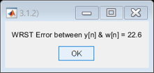
3.1.3 An Echo Filter
The following FIR filter can be interpreted as an echo filter. 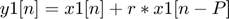 (4). Explain why this is a valid interpretation by working out the following:
% 3.1.3a)****************************************************************** % You have an audio signal sampled at fs = 8000 Hz and you would like to % add a delayed version of the signal to simulate an echo. The time delay % of the echo should be 0.2 seconds, and the strength of the echo should be % 90% percent of the original. Determine the values of r and P in (4); make % P an integer. %************************************************************************** close all %<--close all figures % Frequency the audio signal is sampled fs=8000; %<--Hz % Time Delay delay=0.2; %<--s % Calculations of P and r Ts=1/fs; P=delay/Ts; r=0.9; % 3.1.3b)****************************************************************** % Describe the filter coefficients of this FIR filter, and determine its % length. %************************************************************************** % FIR filter coefficient bb2=[1; zeros(P-2,1); r]'; % FIR filter length length_FIR=length(bb2); % Message Box with results msgbox(sprintf('FIR Filter coefficients are shown on Matlab code \nlength_FIR = %0.5g '... ,length_FIR),'3.1.3b)') % 3.1.3c)****************************************************************** % Implement the echo filter in (4) with the values of r and P determined in % part (a). Use the speech signal in the vector x2 found in the file % labdat.mat. Listen to the result to verify that you have produced an % audible echo. %************************************************************************** % BELOW SECTION HAS BEEN COMMENTED OUT FOR PUBLISHING PURPOSE. % % Load file labdat.mat to get speech signal x2 % load labdat; % % Compute the output - FIR Filter (4) - Audio with Echo % y1=firfilt(bb2,x2); % % Listen to Original Audio % waitfor(msgbox("Click 'OK' to listen to Original Speech Audio","3.1.3c)")) % sound(x2) % pause(4) % % Listen to Audio with Echo % waitfor(msgbox("Click 'OK' to listen to Speech Audio with Ech..." + ... % "o - created... with FIR Filter (4)","3.1.3c)")) % % pause % sound(y1)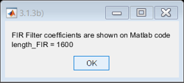
3.2 Cascading Two Systems
More complicated systems are often made up from simple building blocks. In the system of Fig 3. two FIR filters are connected "in cascade". For this session, assume that the filters in Fig. 3 are described by the two equations: 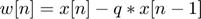 (FIR Filter-1) , (FIR Filter-2)
3.2.1 Overall Impulse Response
% 3.2.1a)****************************************************************** % (a) Implement the system in Fig. 3 using MATLAB to get the impulse % response of the overall cascaded system for the case where q = 0.9, r = % 0.9 and M = 22. Use two calls to firfilt(). Plot the impulse response of % the overall cascaded system. %************************************************************************** clear; %<--clear workspace close all %<--close all figures % Overall Impulse Response - Variables xx=zeros(51,1); %<--Input Array xx(1)=1; %<--Impulse hh=zeros(length(xx),1); %<--Impulse Response % Filter Filter-1 Coef. bb=[1 -0.9]; % FIR Filter-2 Variables r=0.9; M=22; % Impulse response of the System hh=firfilt2(firfilt(bb,xx),hh,r,M); % Array Indices first=1; last=length(xx); nn=first:last; %<-- use first=1 and last=length(xx) % Plots figure(4) stem(first-1:last-1,hh(nn),'LineWidth',2) xlabel('Time Index (n)','FontSize',16); ylabel('Impulse Response h[n]','FontSize',16); title('3.2.1a)Overall Impulse Response, M=22','FontSize',16); % 3.2.1b)****************************************************************** % Work out the impulse response h(n) of the cascaded system by hand to % verify that your MATLAB result in part (a) is correct. (Hint: consult old % Homework problems.) %************************************************************************** % Verification of the Results %w[0]=x[0]-0.9x[0-1]=1 %w[1]=x[1]-0.9x[0]=-0.9 %w[2]=x[2]-0.9x[1]=0 %w[3]=x[3]-0.9x[2]=0 %. %. %. %w[22]=x[22]-0.9w[21]=0 % %y[0]=0.9^0w[0]+0.9^1w[-1]+0.9^2w[-2]+0.9^3w[-3]+...+0.9^22w[-22]=1 %y[1]=0.9^0w[1]+0.9^1w[0]+0.9^2w[-1]+0.9^3w[-2]+...+0.9^22w[-21]=0 %y[2]=0.9^0w[2}+0.9^1w[1]+0.9^2w[0]+0.9^3w[-1]+...+0.9^22w[-20]=0 %y[3]=0.9^0w[3]+0.9^1w[2]+0.9^2w[1]+0.9^3w[0]+...+0.9^22w[-19]=0 %. %. %. %y[22]=0.9^0w[22]+0.9^1w[21]+0.9^2w[20]+...0.9^21w[1]+0.9^22w[0]=0 %y[23]=0.9^0w[23]+0.9^1w[22]+0.9^2w[21]+0.9^3w[20]+...+0.9^22w[1]=-0.088629 %y[24]=0.9^0w[24]+0.9^1w[23]+0.9^2w[23]+0.9^3w[21]+...+0.9^22w[2]=0 %y[25]=0 %y[26]=0 %. %. %. %As we can see the numbers match with our MATLAB result. % 3.2.1c)****************************************************************** % In a deconvolution application, the second system (FIR FILTER-2) tries to % undo the convolutional effect of the first. Perfect deconvolution would % require that the cascade combination of the two systems be equivalent to % the identity system: y[n]=x[n]. If the impulse responses of the two % systems are h1(n)and h2(n), state the condition on h1[n]*h2[n] to % achieve perfect deconvolution. %************************************************************************** % Analysis % Deconvolution is the process of filtering a signal to compensate for an % undesired convolution. Undesired convolution can be: blurried images % (ghosts), echoes in audio, etc. % In our case here, to achieve perfect deconvolution y[n]=x[n]. To extract % the original signal, the deconvolution filter (FIR FILTER-2) must undo % the amplitude and phase changes caused by FIR FILTER-1. Thus, the whole % system, which includes FIR FILTER-1 AND FIR FILTER-2 in cascade, would % have no overall effect on the input. What that mean is that h1[n]*h2[n] % needs to be equals to DELTA for that to be true. Theoretically, this can % be achieved if the right coefficients in each filter are adequate, % however this becomes not so realistic in real world application since % there are always unknowns such as electronic noise, temperature drift, or % variation between devices.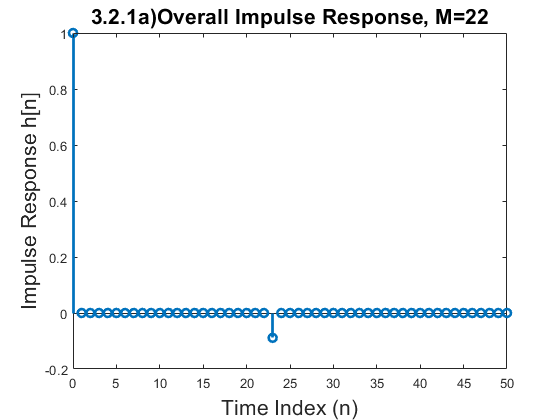
3.2.2 Distorting and Restoring Images
If we pick 'q' to be a little less than 1.0, then the first system (FIR FILTER-1) will cause distortion when applied to the rows and columns of an image. The objective in this section is to show that we can use the second system (FIR FILTER-2) to undo this distortion (more or less). Since FIR FILTER-2 will try to undo the convolutional effect of the first, it acts as a deconvolution operator.
% 3.2.2a)****************************************************************** % Load in the image echart.mat with the load command. It creates a matrix % called echart. %************************************************************************** close all %<--close all figures % Load image echart.mat load echart.mat; % 3.2.2b)****************************************************************** % Pick q=0:9 in FILTER-1 and filter the image echart in both directions: % apply FILTER-1 along the horizontal direction and then filter the % resulting image along the vertical direction also with FILTER-1. Call the % result ech90. %************************************************************************** % Distorting and Restoring Images Variables ech90=zeros(length(echart)); % FIR Filter-1 coefficient bb=[1 -0.9]; % Applying FIR Filter-1 for i=1:length(ech90) ech90(i,:)=firfilt(bb,echart(i,:)); end % 3.2.2c)****************************************************************** % Deconvolve ech90 with FIR FILTER-2, choosing M = 22 and r = 0.9. Describe % the visual appearance of the output, and explain its features by invoking % your mathematical understanding of the cascade filtering process. Explain % why you see “ghosts” in the output image, and use some previous % calculations to determine how big the ghosts (or echoes) are, and where % they are located. Evaluate the worst-case error in order to say how big % the ghosts are relative to “black-white” transitions which are 0 to 255. %************************************************************************** % Distorting and Restoring Images Variables [m,n]=size(echart); rest_ech90=zeros(m,n); % FIR Filter-2 Variables r=0.9; M=22; % Applying FIR Filter-2 (Restoring) for i=1:length(ech90) rest_ech90(i,:)=firfilt2(ech90(i,:),rest_ech90(i,:),r,M); end % Check Image Processing figure(5) subplot(1,3,1) imshow(echart,[]) title('Original Image') subplot(1,3,2) imshow(ech90,[]) title('After FIR-1 ') subplot(1,3,3) imshow(rest_ech90,[]) title('After FIR-2 - Restored Image, M=22') sgtitle("Image processing - Figure 3",'FontSize',16); % Analysis of results: % Looking at the restored image, we conclude that it has plausible been % restored, however it presents "ghosts/echoes". The reason of the echoes % can be explained looking at the impulse response of the whole system. % The impulse response is echoed after n=23, with a value of -0.089. This % corresponds to -8.9% in the gray scale [0 - 255]. % In the gray scaled image, we can predict the worst error (with a FIR Filter-2 (M=22) % to be 255*8.86294% = 22.6. Furthermore, each pixel will echo with % -8.86% of the pixel value [0 - 255] at n=23 forward. % Later on on the lab, we will see the influence of varying the value of FIR % Filter-2 'M' variable.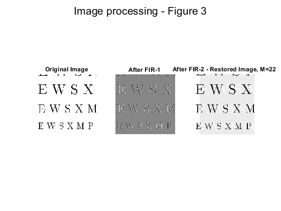
3.2.3 A Second Restoration Experiment
% 3.2.3a)****************************************************************** % Now try to deconvolve ech90 with several different FIR filters for % FILTER-2. You should set r = 0:9 and try several values for M such as 11, % 22 and 33. Pick the best result and explain why it is the best. Describe % the visual appearance of the output, and explain its features by invoking % your mathematical understanding of the cascade filtering process. HINT: % determine the impulse response of the cascaded system and relate it to % the visual appearance of the output image. Hint: you can use dconvdemo to % generate the impulse responses of the cascaded systems, like you did in % the Warm-up. %************************************************************************** close all %<--close all figures % A second restoration experiment variables rest_ech90_2=zeros(m,n); % <--Restoration Array 2 (M2=11) rest_ech90_3=zeros(m,n); % <--Restoration Array 3 (M3=33) hh2=zeros(length(xx),1);hh3=zeros(length(xx),1);%<--Impulse Response Arrays % FIR Filter-2 Variables (different tests) r=0.9; M2=11; M3=33; % Applying FIR Filter-2, M=11 (Restoring) for i=1:length(ech90) rest_ech90_2(i,:)=firfilt2(ech90(i,:),rest_ech90_2(i,:),r,M2); rest_ech90_3(i,:)=firfilt2(ech90(i,:),rest_ech90_3(i,:),r,M3); end figure(6) subplot(1,3,1) imshow(rest_ech90_2,[]) title('Restored Image, M=11') subplot(1,3,2) imshow(rest_ech90,[]) title('Restored Image, M=22') subplot(1,3,3) imshow(rest_ech90_3,[]) title('Restored Image,M=33') sgtitle("Restored images with different M values(FIR Filter-2)",'FontSize',16); % Analysis of results: % It is clear that the best restoration happens when we choose a higher M, % M=33. With a higher M, there are more # of summations for each FIR % FILTER-2 output calculation. This minimizes the worst error (pixel % comparisson between original and restored images). It is also predictable % that the higher the M is, the higher echoed delay the image will have. We % check this from the impulse response of the system with different 'M' % values. % Let's analyze the impulse response in each case to prove % the concept, when: % I) M=11 % II) M=33. % Impulse response of the Systems hh2=firfilt2(firfilt(bb,xx),hh2,r,M2); hh3=firfilt2(firfilt(bb,xx),hh3,r,M3); % Array Indices first=1; last=length(xx); nn=first:last; %<-- use first=1 and last=length(xx) % Plots figure(7) subplot(3,1,1) stem(first-1:last-1,hh2(nn),'b','LineWidth',2) xlabel('Time Index (n)','FontSize',16); ylabel('h[n], M=11','FontSize',16); % xlim([0 25]); title(['3.2.3a) Imp Response - different M values' ... '(FIR-Filter-2)'],'FontSize',16); legend('M=11'); subplot(3,1,2) stem(first-1:last-1,hh(nn),'r','LineWidth',2) xlabel('Time Index (n)','FontSize',16); ylabel('h[n], M=22','FontSize',16); % xlim([0 25]); legend('M=22'); subplot(3,1,3) stem(first-1:last-1,hh3(nn),'g','LineWidth',2) xlabel('Time Index (n)','FontSize',16); ylabel('h[n], M=33','FontSize',16); % xlim([0 25]); legend('M=33'); % 3.2.3b)****************************************************************** % Furthermore, when you consider that a gray-scale display has 256 levels, % how large is the worst-case error (from the previous part) in terms of % number of gray levels? Do this calculation for each of the three filters % in part (a). Think about the following question: “Can your eyes perceive % a gray scale change of one level, i.e., one part in 256?” %************************************************************************** % Calculation of worst cases % Worst-case error when M=11 error1=echart-rest_ech90_2; wrst_error1=max(error1,[],'all'); % Worst-case error when M=22 error2=echart-rest_ech90; wrst_error2=max(error2,[],'all'); % Worst-case error when M=33 error3=echart-rest_ech90_3; wrst_error=max(error3,[],'all'); % Message Box with results msgbox(sprintf('WRST Error(M=11) = %0.5g \nWRST Error(M=22) = %0.5g \nWRST Error(M=33) = %0.5g'... ,wrst_error1,wrst_error2,wrst_error),'3.2.3b)')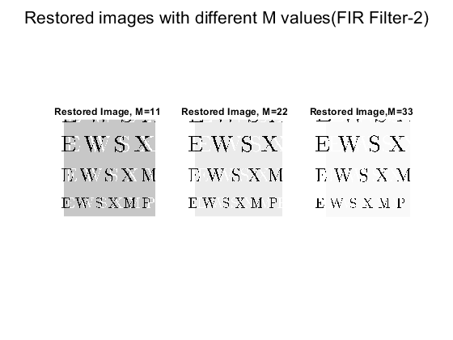 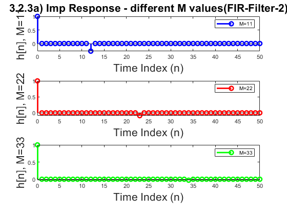 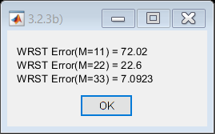